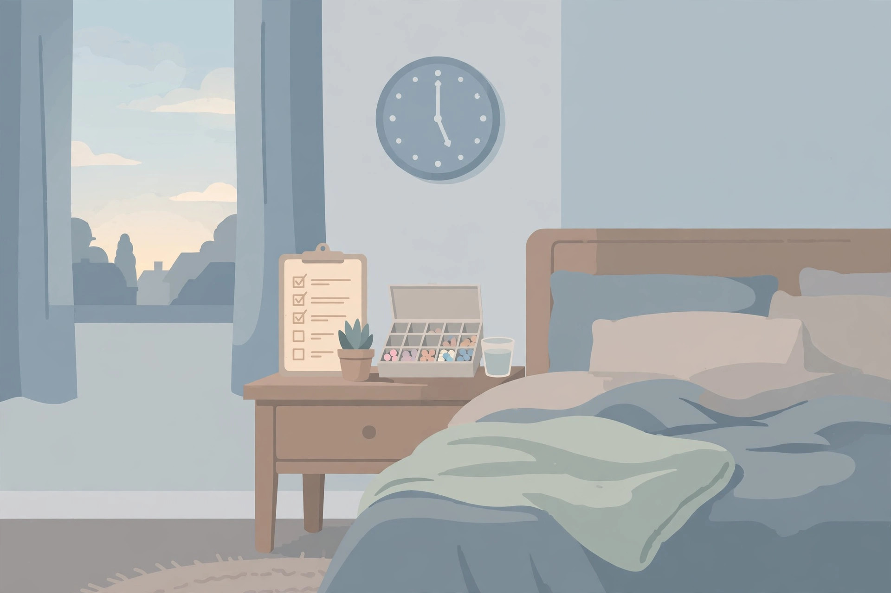

Medication timing when the clocks change: questions to check with your pharmacist

For most once daily medications, the published guidance is calm: it is usually safe to follow the new clock time. That sentence, from AARP guidance on the daylight saving switch, is where most articles stop. It is not where a careful reader should stop, because the same guidance names the exceptions in the next breath, and the exceptions are the whole point of a pharmacist visit. This article gives no answers about your medication. It gives the questions, organized by the kind of schedule you are on, so a five minute conversation before the change weekend covers the cases the general rule does not.
Start here: which kind of schedule are you on?
One distinction decides which questions matter. Medications taken once a day by the clock sit in a different category from medications where the interval between doses is the point, or where steady levels in the body matter. Guidance for families makes the same split: timing matters for medicines that depend on consistent levels, with ADHD stimulants, inhaled steroids, and allergy medicines named as examples where the interval deserves attention. Sort your own list into the groups below before you ask anything. The pharmacist can confirm the sorting in the same conversation.
| Your schedule | The core question | Why it is a question at all |
|---|---|---|
| Once daily, by the clock | Do I simply follow the new clock time? | Published guidance says this is usually safe, and usually is not always |
| Every set number of hours | Does the interval stretch by an hour that night, or do I shift a dose? | Reminders keep their clock times, so the night of the change is an hour longer between two doses in fall |
| Timing critical, such as insulin or Parkinson's medication | What is my personal plan for that weekend? | Guidance names these categories explicitly as ask first cases, including avoiding an accidental extra dose |
| A child's daily medication | Can the time move gradually, and by how much per day? | Family guidance describes gradual moves of 15 to 30 minutes a day for most daily medicines |
That table is a decision framework, not a dosing chart. Every row ends at the pharmacy counter, because the right answer depends on the specific medication, and no general article can see your list.
Questions to ask about once daily medications
Ask these even when you expect the simple answer, because the asking is what surfaces the exception hiding in your list.
- For each once daily medication I take, is following the new clock time right for that specific drug?
- Is any medication on my list one where a one hour shift, once, still matters?
- If I take a dose with food, or at a set distance from food, does the meal move with the clock too?
- Should the change happen in one step on the Sunday, or is a gradual shift better for anything I take?
What a good answer looks like: a medication by medication yes, not a blanket yes. If the answer covers your whole list in one word, ask which items on it were actually checked.
Questions to ask about time critical medications
The published guidance is direct here: if a medication is time critical, ask the pharmacist before the change weekend. AARP guidance names insulin and Parkinson's medications as examples where a pharmacist or provider should advise on adjusting safely, with the specific warning to avoid an accidental extra dose. Family guidance adds that anti seizure and certain cancer medications are called out as requiring a clinician made plan. Turn that into questions:
- Which of my medications count as time critical, in your judgment?
- For each one, what exactly should I do on the night the clocks go back, in clock times I can write down?
- What should I do if I realize the next morning that I took a dose twice, or missed one?
- Does anything I take interact with a shifted dose of something else on my list?
Write the answers down at the counter. A plan you have to remember is a plan that competes with a disrupted sleep weekend, and that weekend is the subject of this whole site.
The repeated hour: a dose that lands between 1 and 2 a.m.
Fall back has one scenario no other night has. The clock reaches 2 a.m., returns to 1 a.m., and the hour between 1 and 2 happens twice. Reminder guidance warns against scheduling a dose inside that repeated hour without a plan, because an app, an alarm, or a tired person can easily treat the second 1:30 as a new dose time. If any dose of yours falls in that window, or an every 12 hours schedule lands there that night, these are the questions:
- My dose falls in the repeated hour. Which occurrence do I take it on, the first or the second?
- How do I mark that night so a reminder app or a family member does not prompt a second dose?
- If my schedule is every set number of hours, does that night's interval become one hour longer, and is that acceptable for this medication?
One rule from the guidance needs no pharmacist to apply, and it is absolute: do not split or adjust doses on your own. The questions exist precisely so the adjustment, if there is one, is made by someone who can see the whole list.
Phones, reminders, and devices: the settings check at home
The home half of the preparation is mechanical. Reminder guidance gives the key check: confirm the phone is set to update its time automatically, so reminders do not drift by an hour when the clock changes. Work through the rest as questions to resolve before the weekend, asking the pharmacist or the device maker where the answer is not obvious:
- Is automatic date and time switched on for the phone that carries my medication reminders?
- Does each reminder keep its clock time across the change, which is the behaviour the medication guidance describes?
- For any medical device I use with its own clock, does it update itself, or does it need a manual change, and who confirms that, the pharmacist, the clinic, or the maker?
- If a device and a phone disagree on the time on Sunday morning, which one governs my doses until they are reconciled?
What success looks like: on Sunday morning, every clock that touches a dose agrees, and you already know which one to trust if one does not.
When to see a professional
Contact a pharmacist, the prescribing clinician, or urgent care promptly if a dose is doubled or missed and you feel unwell, if a time critical medication's schedule was disrupted and no plan covers it, or if you are unsure whether a dose was taken at all. Guessing is the one option this topic does not offer. Bring the written plan and the actual times; both make the conversation short and accurate.
General information only. This article collects questions to ask a pharmacist. It is not medical advice, it does not recommend any change to any medication schedule, and it cannot see your prescriptions. Do not change, split, skip, or double a dose based on anything here. Ask your pharmacist or prescriber about your own medications before the clock change.
— Maya Chen, Health & Wellness Writer